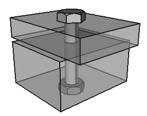

What is a Fastener?¶
A fastener is something that mechanically connects 2 or more things together, such as a screw, bolt, or nail.
For us, a Fastener is an
Assembly containing 1 or more
Part objects.
For example, a nut and bolt holidng together 2 parts together:
may be in the hierarchy:
thing
├○ part_a
├─ fastener
│ ├○ bolt
│ └○ nut
└○ part_b
A fastener is also a convenient way to package relatively complex functionality into more of a “point and shoot” implementation.